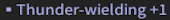

Sense Level
Sense level affects your base attack, health, and armor.
You gain +1 Base Attack, +10 Health and +10 Armor for every 10 Sense Levels you have.
For large-example, if you are at Sense Level 655, you'll have +65 (205 Total) Base Attack, +650 Health and +650 Armor.
It also determines if you deal/take more or less damage in a mission based on its Recommended Sense, which is known as Sense Suppression.
Currently, the ultimate goal is to reach a total Sense of 700.
Increasing Your Sense
You can increase your Sense Level by consuming other Souljades in the Showdown Souljade Enhance section.
Consuming Souljades less than 15 levels below your selected Souljade's Sense will yield diminished XP.
The ideal range for maximum XP gain is within 5 Sense Levels.
It's best to level all 6 equipped Souljades evenly to minimize wasted XP.
However, using Souljades over 20 Sense Levels higher than your selected Souljade will yield massively boosted XP.
This allows you to quickly catch up any Souljades you may have left unleveled, bringing them on par with your main Souljades, as the image below demonstrates.
Optimizing Leveling Sense
Choose a core set of 6 Souljades (e.g. Blue Attack II's) to share between your 3 main heroes as you level up Sense.
You can replace these as you get better Souljades, but only if they are close in level so you don't lose progress.
Try to quickly unlock Yama's Abyss by completing its unlock quest.
Early Abyss stages drop Souljades up to 600 Sense. However, each full Abyss run consumes 30 fatigue instead of 15, so manage accordingly.
Unlocking the Void-Space stages will allow you to get drops up to 680 Sense with relative ease.
Beware, they consume up to 60 fatigue for a full run! For more information on Yama's Abyss check this out
Hero Level
There are two methods to increase your hero's level: by completing Showdown missions and by using Alchemical Crystallized Souls. Note that each hero has a maximum level cap of 20.
Mission Experience
The experience gained from missions scales with your Sense level relative to the mission's recommended Sense level. Having a much higher Sense than recommended will reduce the experience earned. Therefore, it's advisable to farm missions within 25-50 Sense levels of your current Sense if your goal is to efficiently gain hero levels. In terms of the best mission to farm, it is believed to be early Stages of Yama's Abyss.
Alchemical Crystallized Souls
Alchemical Crystallized Souls (ACS) are acquired by beating Showdown missions for the first time with certain heroes.
They are useful for boosting hero levels on characters outside your main three that you don't plan to grind heavily.
However, I don't recommend using ACS on characters you intend to play frequently, as you'll naturally gain their levels over time.
To max a hero from level 1 to 20, it requires a total of 117 ACS.

Level Unlocks
Every 2 hero levels, starting at level 4, you will acquire a major upgrade, with every other level being a minor upgrade. These upgrades are permanent, but only affect the corresponding hero.
Level 4: AoE Attack
Hero unlocks their AOE attack that generally helps a lot with clearing out smaller enemies.
Level 6: Armor Upgrade
Hero's armor is upgraded from blue to purple permanently, giving an additional 250 armor.
Level 8: Ranged Weapon Enhancement
Hero receives their first ranged weapon skill, usually making their ranged weapon more efficient at what it does.
Level 10: Weapon Upgrade
Hero's melee weapon is upgraded from blue to purple permanently, giving a 16.7% damage increase.
Level 12: Aegis-Break Martial Skill
Hero will be able to use a melee attack that greatly damages enemies' astral aegis.
Level 14: Ranged Weapon Upgrade
Hero's ranged weapon is upgraded from blue to purple permanently, giving a 16.7% damage increase.
Level 16: Ranged Weapon Enhancement
Hero's ranged weapon will no longer suffer from a range penalty from any range.
Level 18: Defuse Attack
Hero will be able to use a special dodge that when successful at nullifying an attack, enables a melee attack that greatly damages astral aegis.
Souljades
Epic and Legendary Souljades can only drop from one of two loot pools. These loot pools are the Common Pool and the Special Pool.
Common Pool
The Common Pool contains a majority of all Epics and a small portion of Legendaries currently in Showdown. These souljades can be dropped from any mission and are recommended to be farmed in:
- Any Stronghold Assault mission
- Enigma Domain - Topaz
- Yama's Abyss
- Any Speedrun mission you can complete consistently
You can see all of the Souljades that can drop from a mission by clicking the icon next to the mission's name in the mission select screen.

Special Pool
The special pool contains Epics and Legendary Souljades that can only be dropped from specific missions at certain difficulties. You can also acquire them from Souljade Conversions, but to increase your chances it is best to farm their specific mission.
You can see the special pool of a mission in the stage select screen to the left of the confirm button and hovering over the Souljades displayed.

For Souljades you haven't acquired before, you can check them out in the Narakapedia section to see where they drop.

Element Wielding
Element Wielding is the acquisition of Souljades with either or . By equipping one with an element, it gives you unique effects. These effects stack up to +6.
Ice-Wielding
Ice-Wielding can be quite confusing, but it can be very helpful to have built up as you enter Holoroth. It does 2 things:
- Makes it harder for you to be frozen, by decreasing your Frostbite acquisition from all sources including Frost Omens, Matron of Yushan's attacks, or Ice Fall.
- Increases the damage of your Ice Blasts by 100% per stack. Ice Blasts occur occasionally as you damage an enemy, with Ice-Wielding specific attacks building them up quicker.
Thunder-Wielding
Thunder-Wielding is quite similar, but differs in that it:
- Makes it take longer for you to suffer from Divine Thunder, by decreasing your Thundershock acquisition rate.
- Increases the damage of your Divine Thunder to enemies by 100% per stack. Think of Divine Thunder as the Thunder equivalent to Ice Blasts.
- Increases the damage to enemies from countered Divine Thunder (Thunder Counter).
Attributes
Located below your Souljade's effects will be your Attributes. The number of Attributes present by default varies depending on the Souljade's rarity.
- Common Rarity = 0 Attributes (Only)
- Rare Rarity = 1 Attribute
- Epic Rarity = 2 Attributes
- Legendary Rarity = 3 Attributes
You can acquire up to 4 Attributes on a Souljade through a process known as Recasting. In terms of Attributes you want to go for, generally you want to go for what ever increases your damage. [Windfall] if you can manage to acquire it is one of the best Attributes currently in the game. It will work with any build regardless of what you're aiming for.
Attributes of Interest
Attack, Weapon-Specific Damage Bonus, DMG to Boss, Ice Blast DMG, Divine Thunder DMG, Charged Atk DMG,
& Uncharged Atk DMG are your go-to's on a Souljade when going for a Melee-focused build.
No Depletion: Weaponry Chest, Aegis DMG, Rage/DMG, & Charged Aegis DMG (for Pistol-main)
are your go-to's on a Souljade when going for a Ranged-focused build.
It is recommended to hold on to any Epic or Legendary Souljades that have
Attributes you want so you can work on perfecting Souljades later.
Rare Attributes
Rare Attributes are Attributes with '[]' brackets around them. As the name suggests, they are much rarer to acquire than normal Attributes. However, they tend to have more active effects than other Attributes.
- [Windfall] makes all of the other Attributes on the same Souljade stronger by 30-50%.
Example: Attack +4% with Windfall +30% will become Attack +5.2% - [Moderation] reduces the cooldown of your ability by 15-25%
whenever you activate an Ice Blast or Divine Thunder on an enemy.
Adds up to a cap of 100% from multiple [Moderation]s for instant cooldown on activation. - [Scorching] makes your melee attacks following within 10 seconds from a successful parry apply a burning effect to enemies. Scales in levels, with a total cap at level 12 and a cap per Souljade at level 3.
Souljade Conversion
The Showdown Souljade Conversion menu allows you to convert Souljades you don't want
into Souljades that you would possibly want at random.
You can only receive Souljades from conversion that you have unlocked from completing their corresponding mission.
You can see what you have unlocked by clicking on the
button next to the convert button.
There are two forms of conversion: Basic and Advanced
Basic Conversion
Basic Conversion allows you to convert 20 rare and common rarity Souljades into Epics or Legendaries.
Chance of Epic = 90%
Chance of Legendary = 10%
Advanced Conversion
Advanced Conversion allows you to convert 3 Epics into a random Epic Souljade or 3 Legendaries into a random Legendary Souljade.
Recasting
Recasting is the process of shuffling Attributes from two Souljades to put onto one.
Video Introduction
How It Works
- Only two Souljades of the same rarity can be used for Recasting.
- Every Recast attempt consumes one Quench Crystal.
- The Souljade in the Primary Slot (left slot) will be kept, while the Souljade in the Auxiliary Slot (right slot) will be consumed when Recasting.
- Every Recast attempt has a chance to add an extra Attribute slot, up to 4 slots total.
- Initial chance to gain an extra Attribute slot starts at 3%.
- After 15 Recasts on the same Primary Souljade without gaining an extra Attribute slot, the chance to gain an extra Attribute slot increases.
- The 50th Recast without gaining an extra Attribute slot will be guaranteed to grant one.
- When gaining an extra Attribute slot, there is a slight chance to gain a Rare Attribute.
- You can accept or deny the results of any Recast attempt.
- The Auxiliary Souljade and one Quench Crystal will be consumed regardless of if you accept or deny.
Recasting Strategy
Recasting should be done after exhausting other progression methods, as it consumes valuable Epic & Legendary Souljades and Quench Crystals, making it a resource-intensive process.
When approaching Recasting, particularly when you're aiming for [Windfall] you want to go through a 3-step process. These steps are: Expansion, Transposition and Concentration.
Expansion
Increasing the number of Attribute slots on your Souljade to 4.
Steps:
- Choose a Souljade that you wish to perfect.
- Choose the 4 Attributes that you want on that Souljade.
- Recast the Souljade that you chose in step 1 until it has 4 Attributes.
- Make sure the Souljade you chose is always in the Primary Slot.
- Try to use Souljades that don't have any of the 4 Attributes you want for this step as your Auxiliary Souljades.
- If you're aiming for a Rare Attribute, make sure to only accept the 4th Attribute if you acquire it.
Transposition
Equipping 4 Attributes you want to your Souljade.
Steps:
- Acquire Souljade(s) with any of the 4 Attributes you want.
- Recast the 4 Attribute Souljade you made earlier with Souljades from step 1.
- Make sure to only accept the Recast result if you don't lose any Attributes you want.
- Repeat Step 2 until you have 4 Attributes you want on your chosen Souljade.
Concentration
Maximizing the potency of your 4 Attributes.
Steps:
- Acquire Souljade(s) with at least one of the 4 Attributes you want.
- The more of the wanted Attributes it has, the less chance of wasted attempts.
- Use those acquired Souljades to Recast your chosen Souljade.
- Only accept results that keep all 4 of your wanted Attributes AND increase their % values.
- Repeat these steps until your Souljade is as potent as you want it to be.
Key Notes
- The % value of an Attribute that is Recasted onto a Souljade is influenced by the prior value.
Recasting with Souljades that have high % values has a higher chance of high % results. - Try to recast on Souljades with the Element Wielding type that you want to preserve Elemental Essence consumption.
- Rare Attributes have the best chance of appearing from gaining extra Attribute slots.
- It is more important to keep an Attribute that you want than to get a higher % on another.
Recasting Calculator
Want to calculate your odds of a successful Recast? Check out my Recasting Calculator!